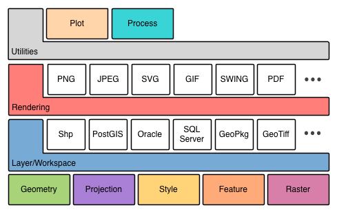
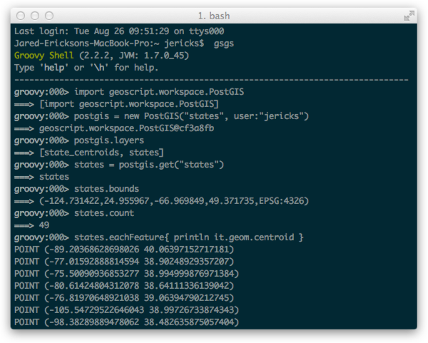

GeoScript
The GeoSpatial Swiss Army Knife
Jared Erickson & Justin Deoliveira
What is GeoScript?
Spatial capabilities for scripting languages on the JVM.
- Groovy, Python, Javascript, Scala, Ruby
- Similar API across languages
- Convenience for JTS and GeoTools
GeoScript Modules
Buffer a Point
Java
GeometryFactory geometryFactory = new GeometryFactory();
Point point = geometryFactory.createPoint(new Coordinate(-122.478899, 47.268195));
point.buffer(10);
Buffer a Point
Groovy
new Point(-122.478899, 47.268195).buffer(10)
Python
Point(-122.478899, 47.268195).buffer(10)
Render a Map
Java
StyleFactory styleFactory = CommonFactoryFinder.getStyleFactory(null);
SLDParser parser = new SLDParser(styleFactory, new File("states.sld"));
Style style = parser.readXML()[0];
ShapefileDataStore shapefile = new ShapefileDataStore(new File("states.shp").toURI().oURL());
FeatureSource<SimpleFeatureType, SimpleFeature> features =
shapefile.getFeatureSource(shapefile.getTypeNames()[0]);
MapContext context = new DefaultMapContext(new MapLayer[]{
new DefaultMapLayer(features, style)
});
BufferedImage image = new BufferedImage(300, 300, BufferedImage.TYPE_INT_ARGB);
Graphics2D graphics = image.createGraphics();
Rectangle screenArea = new Rectangle(0, 0, 300, 300);
ReferencedEnvelope mapArea = features.getBounds();
StreamingRenderer renderer = new StreamingRenderer();
renderer.setContext(context);
renderer.paint(graphics, screenArea, mapArea);
ImageIO.write(image, "png", new File("states.png"));
Render a Map
Groovy
Layer layer = new Shapefile("states.shp")
layer.style = new SLDReader().read(new File("states.sld"))
Map map = new Map(layers: [layer], width: 300, height: 300)
map.render(new File("states.png"))
Load PostGIS Features
Java
Map<String, Object> params = new HashMap<String, Object>();
params.put("dbtype", "postgis");
params.put("database", "usa");
params.put("schema", "public");
params.put("host", "localhost");
params.put("port", "5432");
params.put("user", "bob");
DataStore dataStore = DataStoreFinder.getDataStore(params);
try {
SimpleFeatureSource featureSource = dataStore.getFeatureSource("states");
SimpleFeatureCollection featureCollection = featureSource.getFeatures();
SimpleFeatureIterator it = featureCollection.features();
try {
while(it.hasNext()) {
SimpleFeature f = it.next();
System.out.println(f.getAttribute("STATE_NAME") + " at " + ((Geometry)f.DefaultGeometry()).getCentroid().toText());
}
} finally {
it.close();
}
} finally {
dataStore.dispose();
}
Load PostGIS Features
Python
PostGIS db = new PostGIS('usa', user: 'bob')
for f in db['states'].features():
print '%s at %s' % (f['STATE_NAME'], f.geom.centroid)
Create a Shapefile
Java
SimpleFeatureTypeBuilder featureTypeBuilder = new SimpleFeatureTypeBuilder();
featureTypeBuilder.setName("points");
featureTypeBuilder.setSRS("EPSG:4326");
featureTypeBuilder.add("the_geom", Point);
featureTypeBuilder.add("id", Integer);
featureTypeBuilder.add("name", String);
SimpleFeatureType featureType = featureTypeBuilder.buildFeatureType();
File file = new File("points.shp");
Map<String,Object> params = new HashMap<String, Object>();
params.put("url", DataUtilities.fileToURL(file));
DataStore dataStore = DataStoreFinder.getDataStore(params);
dataStore.createSchema(featureType);
SimpleFeatureStore featureStore = (SimpleFeatureStore) dataStore.FeatureSource("points");
SimpleFeatureBuilder featureBuilder = new SimpleFeatureBuilder(featureType);
GeometryFactory geometryFactory = new GeometryFactory();
FeatureCollection features = new DefaultFeatureCollection(null, featureType)
featureBuilder.add(geometryFactory.createPoint(new Coordinate(1, 1)));
featureBuilder.add(1);
featureBuilder.add("one");
features.add(featureBuilder.buildFeature(null));
featureBuilder.add(geometryFactory.createPoint(new Coordinate(2, 2)));
featureBuilder.add(2);
featureBuilder.add("two");
features.add(featureBuilder.buildFeature(null));
featureStore.addFeatures(features);
dataStore.dispose();
Create a Shapefile
JavaScript
var dir = new Directory('.');
var shp = dir.add(new Layer({
name: 'points',
fields: [{
name: 'geom', type: 'Point'
}, {
name: 'id', type: 'Integer'
}, {
name: 'name', type: 'String'
}]
});
shp.add([new Point([1,1], 1, 'one')]);
shp.add([new Point([2,2], 2, 'two')]);
What else can I do with GeoScript?
Read, write, and translate spatial formats
import geoscript.workspace.*
import geoscript.layer.Layer
File dir = new File("shp")
PostGIS postgis = new PostGIS("naturalearth")
Directory directory = new Directory(dir)
directory.layers.each { Layer layer ->
postgis.add(layer)
}
Encode and decode exchange formats like GeoJSON, GML, WKT, and WKB
from geoscript.geom import readJSON, writeGML, readWKT, writeWKB
writeGML(readJSON("""{"type":"Point", "coordinates":[1,2]}"""))
writeWKB(readWKT("POINT (1 2)"))
Process and transform data on the fly
var proj = require('geoscript/proj')
var Directory = require('geoscript/workspace').Directory
var Layer = require('geoscript/layer').Layer
var shp = new Directory('.').get('states.shp')
var points = new Layer({
name: 'Points',
fields: [{
name: 'geom', type: 'Point'
}]
});
shp.features.forEach(function(f) {
points.add({name: proj.transform(f.get('geom').centroid)});
});
Generate styles for rendering maps
from geoscript.style import *
from geoscript.render import *
from geoscript.layer import Shapefile
style = Fill('#4DFF4D', 0.7).where('PERSONS < 2000000')
style += Fill('#FF4D4D',0.7).where('PERSONS BETWEEN 2000000 AND 4000000')
style += Fill('#4D4DFF',0.7).where('PERSONS > 4000000')
style += Stroke(width=0.2) + Label('STATE_ABBR', 'Times New Roman 14px')
draw(Shapefile('states.shp'), style)
How can I use GeoScript?
Read Eval Print Loop (REPL)
GeoServer WPS
uDig Spatial Toolbox
As a Library
<repository>
<id>boundless</id>
<name>Boundless Maven Repository</name>
<url>http://repo.boundlessgeo.com/main</url>
<snapshots>
<enabled>true</enabled>
</snapshots>
</repository>
<dependency>
<groupId>org.geoscript</groupId>
<artifactId>geoscript-groovy</artifactId>
<version>1.3</version>
</dependency>
repositories {
maven {
url "http://repo.boundlessgeo.com/main"
}
}
dependencies {
compile "org.geoscript:geoscript-py:1.3"
}
http://locationtech.org
Some Real World Examples
Land Area Statistics
WNV Spatial Analysis